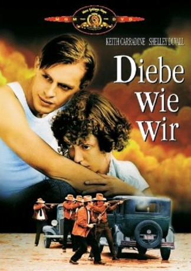

#7458 Diebe wie wir
Alternativ: Thieves Like Us
 
 IMDB-Wertung: 7.1 / 10
IMDB-Wertung: 7.1 / 10  Metascore: 0
Metascore: 0 
Two convicts break out of Mississippi State Penitentiary in 1936 to join a third on a long spree of bank robbing, their special talent and claim to fame. The youngest of the three falls in love along the way with a girl met at their hideout, the older man is a happy professional criminal with a romance of his own, the third is a fast lover and hard drinker fond of his work. The young lovers begin to move out of the sphere in which they have met, a last robbery in Yazoo City goes badly and puts paid to the gang once and for all as a profitable venture, but isn't the end of the story quite yet, as all three are wanted and notorious men with altogether different points of view on the situation they are faced with.
Jahr: 1974
Dauer: 122 Minuten
FSK: 12
Land: USA Studio: United ArtistsTonspuren: DD2.0 - ,
Untertitel:
Auflösung: 1080p (1920x1040) Größe: 8304 MB
Genre: Drama, Krimi, Liebe
Regisseur:  Robert Altman
Robert Altman
Drehbuch: Calder Willingham
Soundtrack:
Darsteller:
 Keith Carradine als Bowie
Keith Carradine als Bowie Shelley Duvall als Keechie
Shelley Duvall als Keechie John Schuck als Chicamaw
John Schuck als Chicamaw Bert Remsen als T-Dub
Bert Remsen als T-Dub Louise Fletcher als Mattie
Louise Fletcher als Mattie Tom Skerritt als Dee Mobley
Tom Skerritt als Dee Mobley Franklin D. Roosevelt als Himself - Speech , archive sound, uncredited
Franklin D. Roosevelt als Himself - Speech , archive sound, uncredited- Ann Latham als Lula
- Al Scott als Capt. Stammers
- John Roper als Jasbo
- Mary Waits als Noel Joy
- Rodney Lee als James Mattingly
- Arch Hall Sr. als Alvin
- Joan Tewkesbury als Lady in Train Station
- Eleanor Matthews als Mrs. Stammers
- Pam Warner als Woman in Accident
- Suzanne Majure als Coca-Cola Girl
- Walter Cooper als Sheriff
- Lloyd Jones als Sheriff
- Matthew R. Altman als Kid Getting Free Soda , uncredited
- Sim Dulaney als Prisoner , uncredited
Datei: X:\1974\Diebe wie wir (1974, FSK12, 1920x1040).mkv seit 13.11.2017
Festplatte: HD 1971-1979
 Es gibt insgesamt 33 Filme in der Gruppe '1974'
Es gibt insgesamt 33 Filme in der Gruppe '1974'